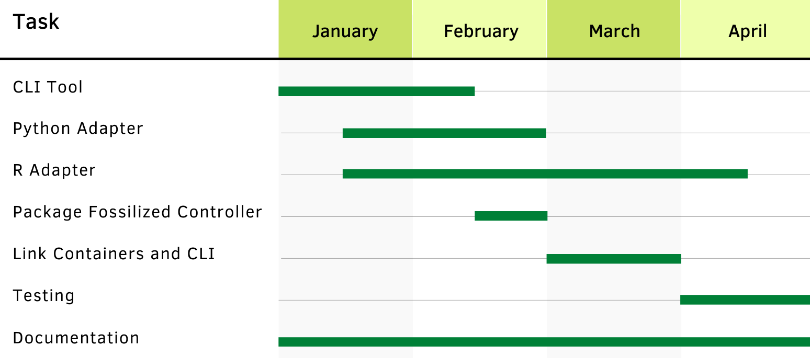

Project Description
Climate change is a pressing issue that researchers have been actively trying to combat in the past few decades. One field of research meant to aid this battle is paleoclimatology, the study of past climates. By understanding how climate has changed over the past several thousand years, scientists can predict and prepare for what will happen. With different types of data gathered all around the world, paleoclimatologists have been able to create climate reconstructions that can show temperatures of different regions across history. It is important for scientists to share these climate models amongst each other but it can become difficult with how complex the models can become.
Our client, Nicholas McKay, is an associate professor at NAU and a researcher in the Paleoclimate Dynamics Laboratory (PDL) working with these climate models. PDL, along with collaborators at the University of Southern California, have worked to create a system that gathers reconstructions and provides constant updates. This is the Paleoclimate Reconstruction Storehouse, otherwise known as PReSto. With PReSto, Dr. McKay and collaborators can accept different datasets and models from different researchers and submit them to their system. With the thousands of types of datasets, however, it is difficult for researchers to submit their code to PReSto without an existing standardized way to review them. Scientists use a multitude of programming languages, libraries, dependencies, and operating systems that are not guaranteed to work on other systems. Containerization is a way to package software so that it will be compatible across different host operating systems. It also allows users to test a model without having to install different libraries or dependencies. They simply need to build a container and run it to view the model.
A current problem within the research community is that not every climate scientist has the skillset to create their own containers since it is newer technology. Having scientists who are trying to contribute to PReSto learn the intricacies of containerization is inefficient. PReSto aims to create a streamlined process so that scientists can contribute their models in a more efficient manner. We will create a command line interface, CLI, for scientists interacting with PReSto so that they can submit their models in an efficient manner that is easily accessible and language agnostic. The CLI is bundled within the Fossilized Controller, the overarching tool that helps scientists build and communicate with their containers. The tool will guide the user through the container creation process with prompts for clarification. From there, they can run the models or send files with the help of adapter libraries. The libraries are added to the model code so that the Fossilized Controller can adequately communicate with the containers.
Requirements
The main high level requirements for our project are: creating a command line interface and communicating with containers
Schedule
- Command Line Interface (CLI)
- Guide users through containerization process
- Run containers with climate model parameters
- Create containers
- Run containers
- Remove containesr
- Collect climate model output
- Communicating With Containers
- Send files to container
- Receive files from container
- Adapter Libraries
- R Library to connect CLI and containers
- Python Library to connect CLI and containers